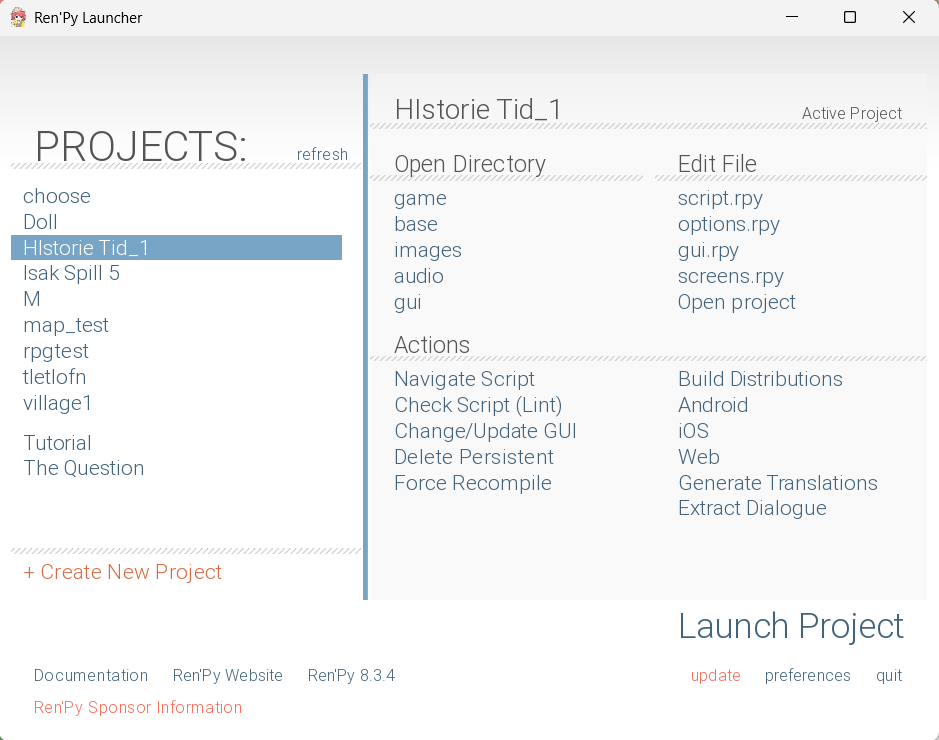
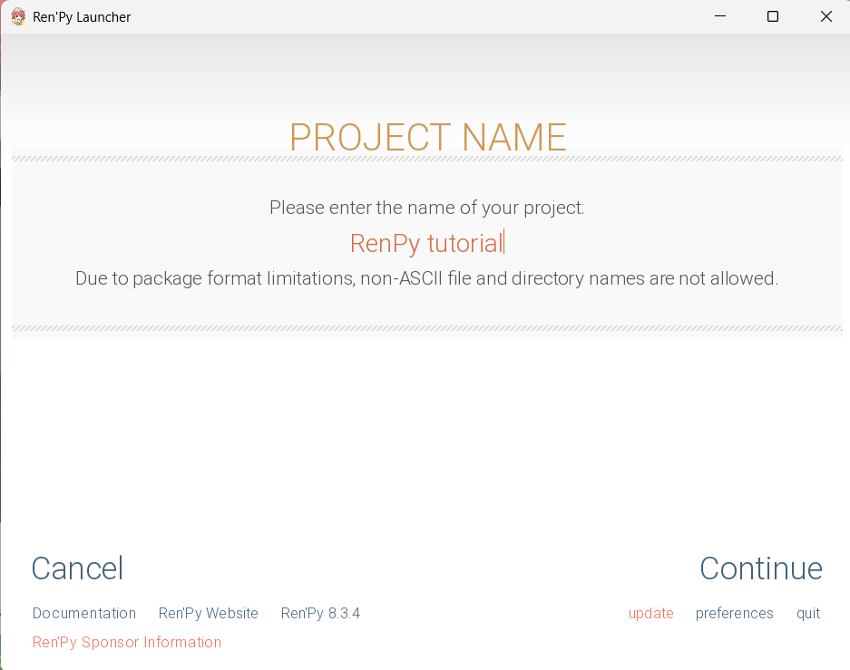
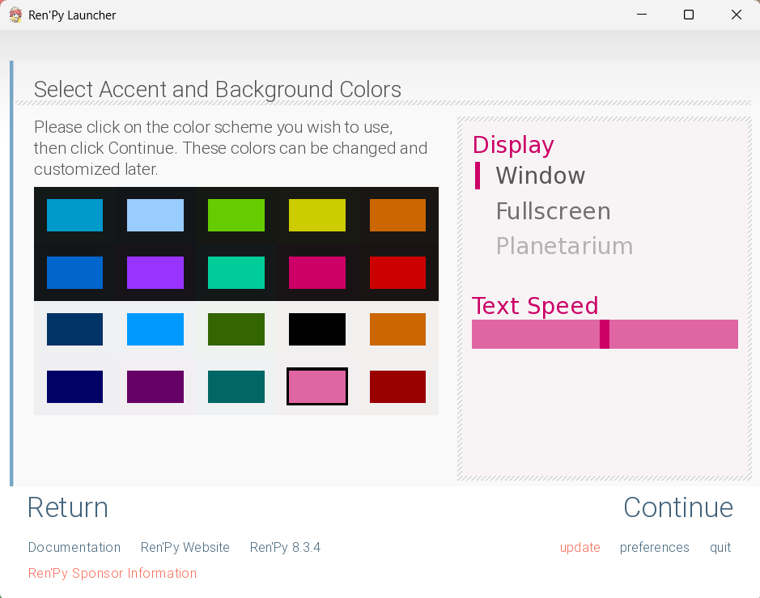
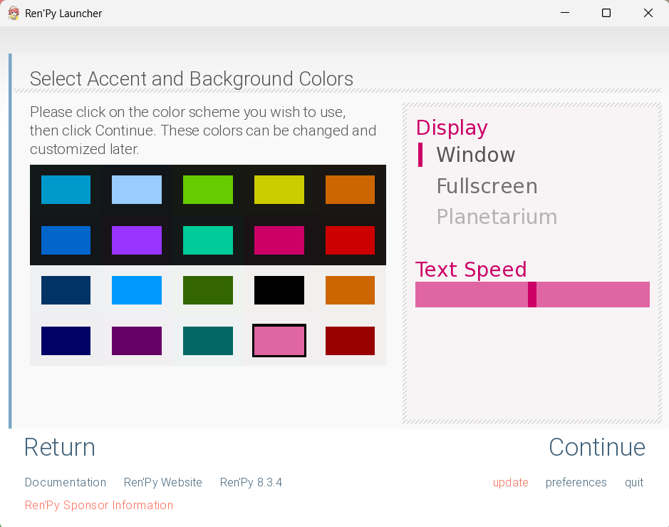
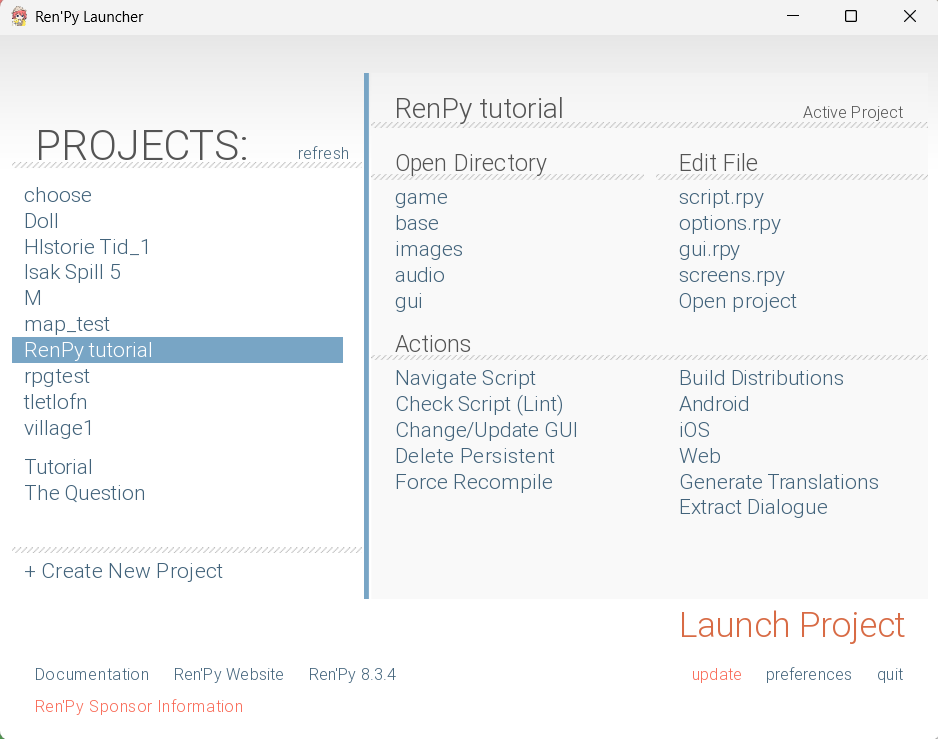

Trinn 1: Gå til den offisielle nettsiden
Først går du til den offisielle Ren’Py-nettsiden:
renpy.org.
Der finner du den nyeste versjonen av Ren’Py for ditt operativsystem (Windows, Mac eller Linux).
Klikk på Download Ren’Py-knappen på nettsiden. Velg riktig versjon for systemet ditt, og vent til nedlastingen er ferdig.
Trinn 2: Lag ditt første prosjekt
Når Ren’Py åpnes, vil du se menyen. Klikk på «Create New Project»(teksten i oransj), gi spillet ditt et navn (for eksempel Ren’Py Test).
 Trinn 3: Customise prosjektet ditt
Nå kan du velge størrelse på prosjektet, anbefaler å bruke 1920x1080 får nå. Så kan du velge enkelt farge tema til spillet, men ikke stress, det går ann å bytte på senere!
 

Hvis du har gjort alt riktig, skal du se navnet på prosjektet ditt under projects på venstre side.
Flott! Nå er Ren’Py installert og spillet ditt er klar til bruk.
← Tilbake til forsiden Neste del →